스템 오디오를 불러와 트랙별 믹싱, 볼륨 오토메이션, 마스터 EQ, 페이드, MP3/WAV 출력까지 처리하는 데스크톱 DAW 앱입니다.
FocusDAW Studio는 여러 개의 스템 파일을 한 세션에 등록한 뒤, 각 트랙의 볼륨, 팬, 솔로, 뮤트, 리버브, 에코를 조정하고 최종 마스터를 출력하는 앱입니다. 전체 믹스에는 9밴드 그래픽 EQ, 마스터 볼륨, 출력 리버브/에코, 페이드 인/아웃을 적용할 수 있습니다.
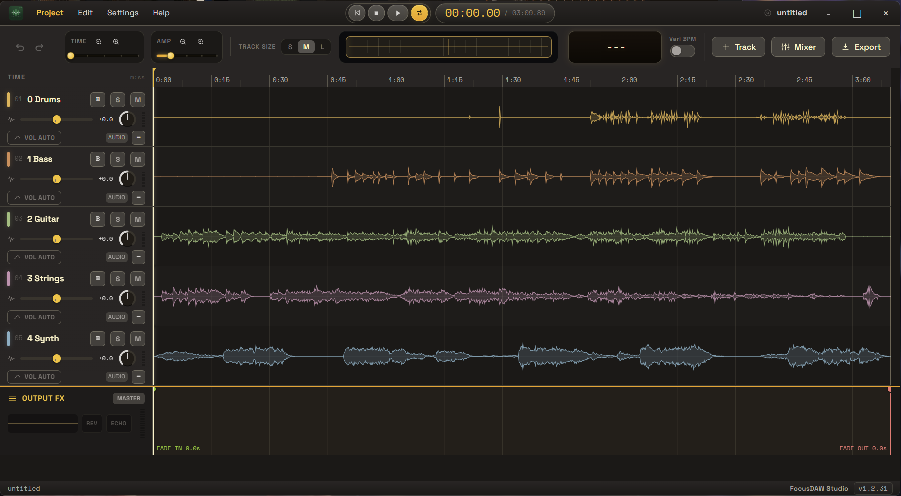
.mp3, .wav, .aif, .aiff, .m4a, .ogg, .flac.focus.mp3, .wav개발 환경에서 실행할 때는 프로젝트 루트에서 다음 명령을 사용합니다.
npm start
패키징된 앱에서는 FocusDAW Studio 실행 파일을 열면 됩니다.
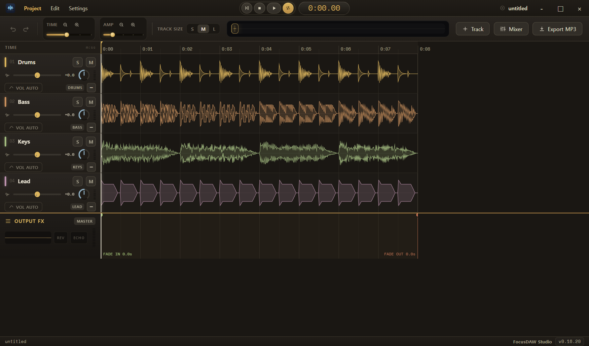
| New Project | 현재 세션을 비우고 새 프로젝트를 시작합니다. |
|---|---|
| Open Project... | 저장된 .focus 프로젝트 파일을 엽니다. |
| Save Project | 현재 프로젝트 상태를 .focus 파일로 저장합니다. 트랙 설정, 마스터 설정, 오토메이션, 클립 정보가 저장됩니다. |
| Import Stem Folder... | 선택한 폴더의 루트에 있는 오디오 파일을 한 번에 등록합니다. |
| Import Audio Files... | 개별 오디오 파일을 여러 개 선택해 트랙으로 추가합니다. |
| Load Demo Session | Drums, Bass, Keys, Lead 데모 트랙을 불러와 앱 기능을 시험합니다. |
| Export MP3... | 믹스다운 내보내기 창을 엽니다. 실제 창에서는 MP3와 WAV를 선택할 수 있습니다. |
오디오를 가져오는 방법은 세 가지입니다.
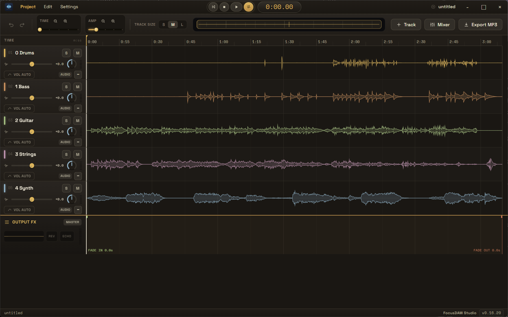
여러 스템을 가져오면 보컬, 드럼, 베이스, 기타, 스트링, 신스처럼 파일별로 독립 트랙이 생성됩니다. 각 트랙은 같은 시작점에 놓이지만, 실제 오디오가 없는 구간은 빈 파형으로 보이므로 편곡의 구간별 밀도를 한눈에 확인할 수 있습니다.
메인 타임라인 영역으로 오디오 파일을 끌어다 놓아도 트랙을 추가할 수 있습니다. 지원하지 않는 확장자는 자동으로 무시됩니다.
.focus 프로젝트는 오디오 설정과 파일 경로를 저장합니다. 원본 오디오 파일이 이동되면 트랙에 NO AUDIO가 표시될 수 있습니다. 이 경우 같은 이름의 오디오 파일을 다시 가져오면 누락된 트랙이 재연결됩니다.
상단 중앙의 컨트롤로 처음으로 이동, 정지, 재생/일시정지, 루프를 조작합니다. 현재 재생 위치는 분:초 형식으로 표시됩니다.
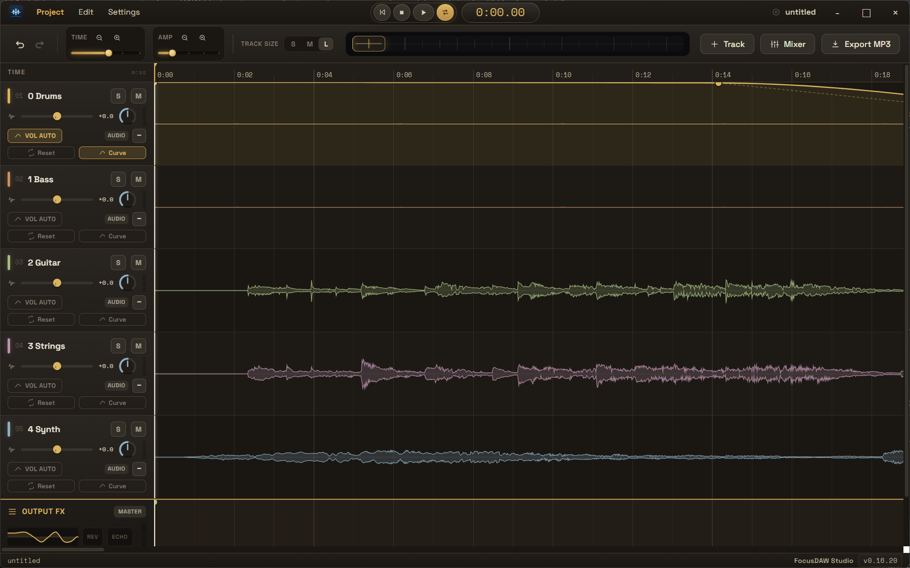
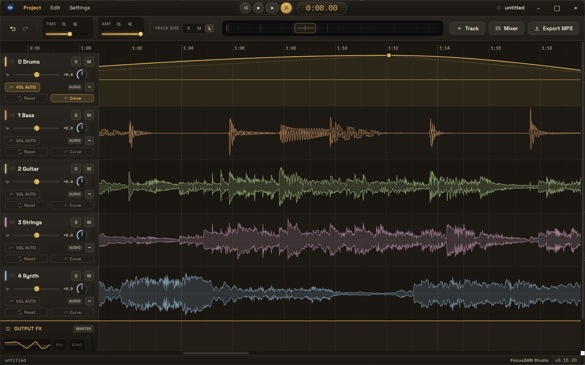
타임라인 위쪽의 긴 막대는 전체 곡에서 현재 보고 있는 위치를 보여주는 미니맵입니다. 미니맵 안의 선택 영역을 드래그하면 긴 프로젝트에서도 원하는 시간대로 빠르게 이동할 수 있습니다.
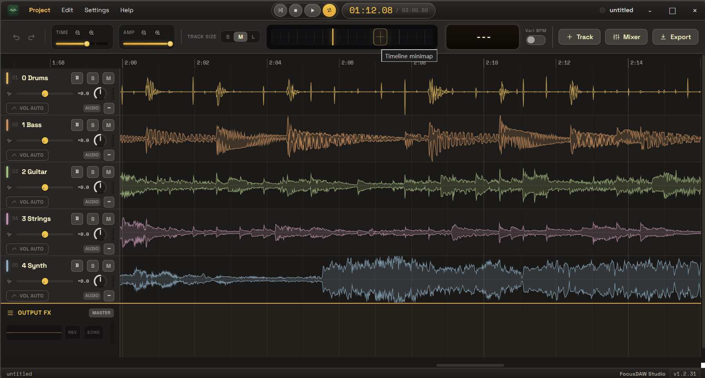
| 볼륨 슬라이더 | 트랙의 재생 레벨을 조절합니다. 0dB 지점은 슬라이더 중앙 눈금으로 표시됩니다. |
|---|---|
| Pan 노브 | 좌우 스테레오 위치를 조정합니다. |
| S 버튼 | 해당 트랙만 듣는 Solo 기능입니다. Solo가 켜진 트랙이 있으면 다른 트랙은 자동으로 들리지 않습니다. |
| M 버튼 | 해당 트랙을 음소거합니다. |
| 레벨 미터 | 트랙의 현재 출력 레벨을 표시합니다. |
| 삭제 버튼 | 트랙을 제거합니다. 확인 창에서 삭제를 확정해야 합니다. |
트랙 헤더의 VOL AUTO를 켜면 트랙 위에 볼륨 오토메이션 곡선이 표시됩니다. 곡선의 점은 시간에 따른 볼륨 변화를 의미합니다.
| 마우스 왼쪽 버튼 클릭 | 오토메이션 선 위를 클릭하면 새 편집점이 추가됩니다. |
|---|---|
| 편집점 드래그 | 편집점 위에 마우스를 올리면 손 모양 커서로 바뀝니다. 그 상태에서 마우스 왼쪽 버튼을 누른 채 움직이면 편집점의 시간 위치와 볼륨 값을 이동할 수 있습니다. |
| 마우스 오른쪽 버튼 클릭 | 편집점 위에 마우스를 올려 손 모양 커서가 보이는 상태에서 오른쪽 마우스 버튼을 누르면 해당 편집점이 삭제됩니다. 시작점과 끝점은 삭제되지 않습니다. |
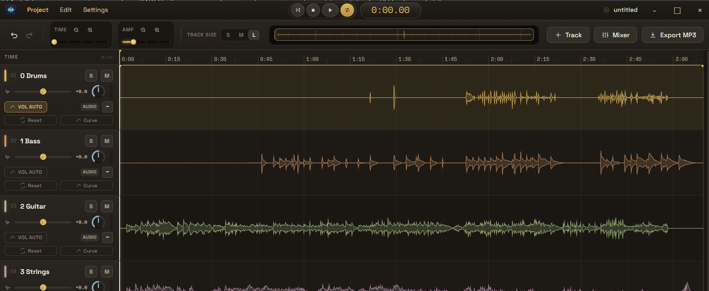
오토메이션 선 위를 클릭해 포인트를 추가하고, 포인트를 드래그해 볼륨 변화 시점과 크기를 조절합니다. 아래로 내린 구간은 소리가 작아지고, 위로 올린 구간은 원래 볼륨에 가깝게 재생됩니다.
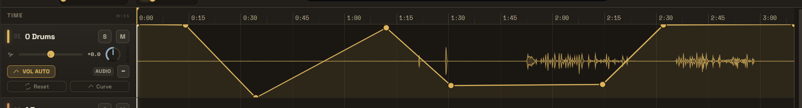
Curve를 켜면 포인트 사이가 직선이 아니라 부드러운 곡선으로 이어집니다. 급격한 볼륨 변화보다 자연스러운 페이드나 강조를 만들 때 유용합니다.
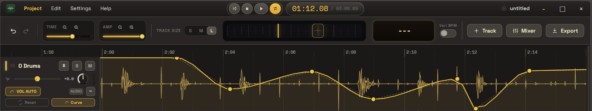
상단 오른쪽의 Mixer 버튼을 누르면 떠 있는 믹서 창이 열립니다. 믹서 창은 제목 표시줄을 드래그해 위치를 옮길 수 있습니다.
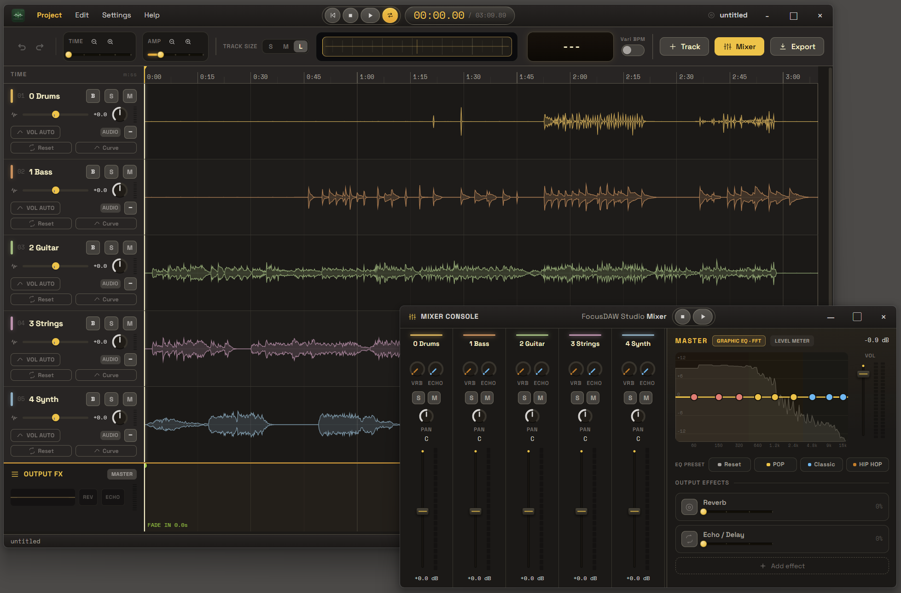
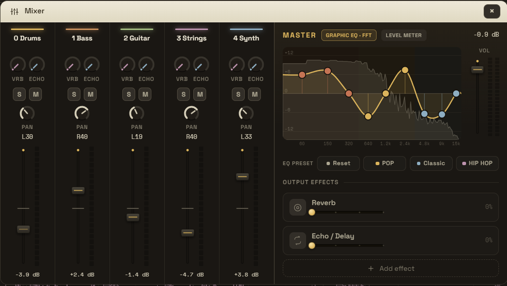
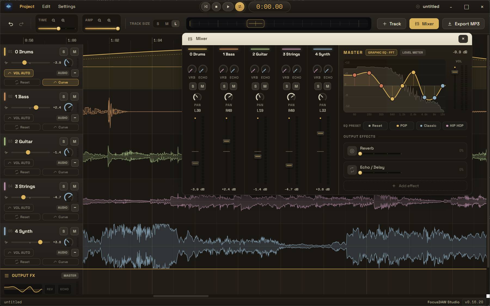
MASTER 패널은 최종 출력에 적용되는 설정입니다. 9밴드 Graphic EQ, FFT 또는 Level meter 보기, 마스터 볼륨, 마스터 리버브/에코, EQ 프리셋을 제공합니다.
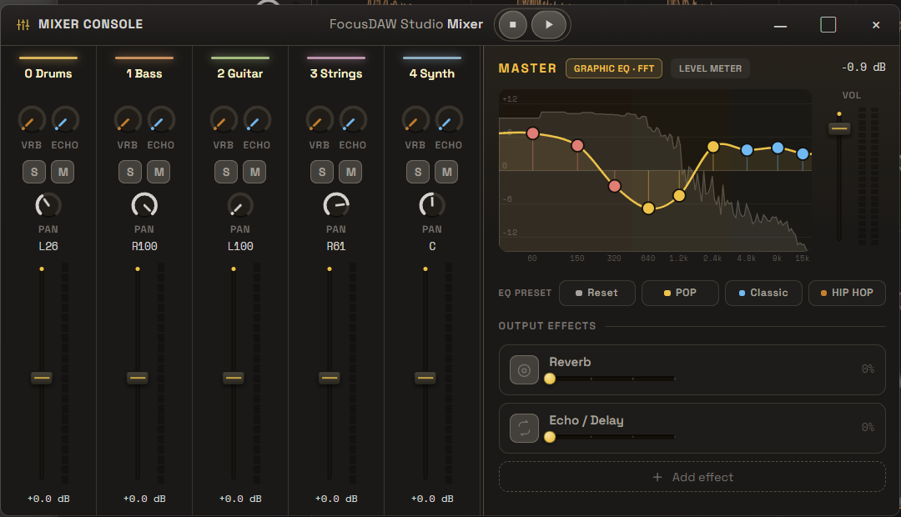
| Graphic EQ · FFT | 스펙트럼 배경 위에 EQ 곡선을 표시합니다. 각 밴드 포인트를 드래그해 -12dB부터 +12dB까지 조절합니다. |
|---|---|
| Level meter | 주파수 대역별 레벨 미터를 표시합니다. EQ 포인트 오버레이도 함께 조작할 수 있습니다. |
| EQ PRESET | Flat, Pop, Classic, HipHop 프리셋을 바로 적용합니다. |
| Output Effects | 최종 출력에 Reverb와 Echo / Delay를 추가합니다. |
타임라인 맨 아래의 OUTPUT FX 트랙은 Master 트랙 역할을 하며, 전체 믹스에 적용되는 페이드와 EQ/효과 상태를 보여줍니다. 이 트랙에서 Fade in/out 길이를 직접 조정할 수 있습니다.
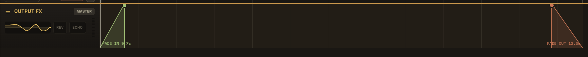
| 왼쪽 점 드래그 | OUTPUT FX 트랙 왼쪽의 초록 점을 좌우로 드래그하면 곡 시작 부분에 Fade in 효과를 줄 수 있습니다. 점을 오른쪽으로 옮길수록 서서히 커지는 시간이 길어집니다. |
|---|---|
| 오른쪽 끝 점 드래그 | OUTPUT FX 트랙 오른쪽 끝의 빨간 점을 좌우로 드래그하면 곡 끝부분에 Fade out 효과를 줄 수 있습니다. 점을 왼쪽으로 옮길수록 서서히 작아지는 시간이 길어집니다. |
| 적용 범위 | Fade in/out은 개별 트랙이 아니라 최종 Master 출력에 적용되며, 재생과 믹스다운 내보내기에 모두 반영됩니다. |
Export MP3 버튼 또는 Project > Export MP3... 메뉴를 누르면 Export mixdown 창이 열립니다. 실제 내보내기 창에서는 MP3와 WAV 중 하나를 고를 수 있습니다.
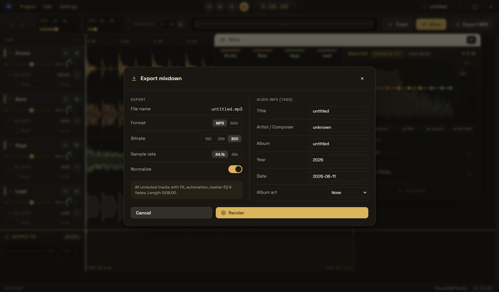
| Format | MP3 또는 WAV를 선택합니다. |
|---|---|
| Bitrate | MP3 출력 시 192, 256, 320kbps 중에서 선택합니다. |
| Sample rate | 44.1kHz 또는 48kHz로 렌더링합니다. |
| Normalize | 최종 출력이 과도하게 커지지 않도록 렌더링 단계에서 정규화/리미팅을 적용합니다. |
제목, 아티스트/작곡가, 앨범, 연도, 날짜를 입력할 수 있습니다. MP3 형식에서는 앨범 아트도 함께 넣을 수 있습니다. 프리셋 커버를 선택하거나 이미지 파일을 직접 고를 수 있습니다.
상단 메뉴의 Settings를 누르면 색상 테마를 변경하거나 분리된 믹서 창의 환경 설정을 관리할 수 있습니다.
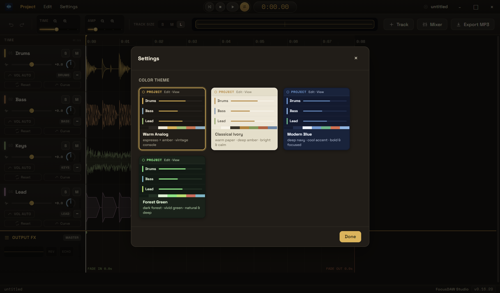
| Space | 재생 / 일시정지 |
|---|---|
| F3 | 믹서 콘솔(Mixer) 열기 / 닫기 |
| Ctrl + S | 프로젝트 저장 |
| Ctrl + O | 프로젝트 열기 |
| Ctrl + Z | 실행 취소 |
| Ctrl + Y | 다시 실행 |
| Ctrl + Shift + Z | 다시 실행 |
| S | 선택/탐색 도구 선택. 현재 화면에서는 도구 UI가 숨겨져 있을 수 있습니다. |
| C | 클립 자르기 도구 선택. 현재 화면에서는 도구 UI가 숨겨져 있을 수 있습니다. |
| J | 클립 합치기 도구 선택. 현재 화면에서는 도구 UI가 숨겨져 있을 수 있습니다. |
원본 오디오 파일의 위치가 바뀌었을 가능성이 큽니다. 같은 파일을 다시 가져오면 앱이 누락된 트랙을 파일 이름 또는 경로 기준으로 재연결합니다.
데스크톱 앱은 내부적으로 ffmpeg를 사용해 MP3를 인코딩합니다. 개발 환경에서 문제가 있으면 의존성이 설치되어 있는지 확인한 뒤 npm install을 다시 실행하세요. 브라우저에서 직접 실행하는 경우에는 lamejs가 로드되어야 MP3 인코딩이 가능합니다.
FocusDAW Studio의 최소 창 크기는 960x600입니다. 믹서나 Export 창이 좁게 보이면 창을 넓히거나 타임라인을 스크롤해 필요한 영역을 확인하세요.